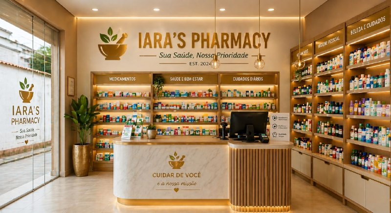

Farmacêutica em Formação · Futura Empreendedora
Construindo uma sólida carreira na área da saúde com dedicação, precisão e visão de futuro. Unindo conhecimento acadêmico à experiência prática para fazer a diferença.
"Acredito que a excelência na área da saúde começa com compromisso, estudo contínuo e genuíno cuidado com o próximo."
Minha trajetória na saúde começou de forma prática: atuando na área farmacêutica antes mesmo de ingressar na graduação. Esse contato direto com o setor despertou em mim uma paixão real pelo campo e solidificou minha certeza de carreira.
Atualmente curso o 2° período de Farmácia na UNIFEMM, onde cada disciplina reforça meu compromisso com a qualidade e a responsabilidade que essa profissão exige. Tenho como meta ir além: com planos de ampliar minha formação em Biomedicina e, futuramente, empreender para abrir minha própria farmácia.
Mais de um ano de vivência no ambiente farmacêutico, com atuação direta no atendimento ao cliente, controle de estoque e orientação sobre medicamentos e produtos. Uma experiência que moldou minha visão prática da profissão e aprimorou habilidades de comunicação, organização e responsabilidade.
Graduação em pleno andamento, com foco em farmacologia, química farmacêutica e gestão em saúde. Cada semestre fortalece minha base técnica e científica para uma atuação profissional de excelência.
Após concluir a graduação em Farmácia, planejo ampliar minha qualificação cursando Biomedicina, integrando conhecimentos que enriquecerão minha prática profissional e abrirão novos horizontes de atuação na saúde.
Com sólida formação técnica e visão empreendedora, meu objetivo é fundar e administrar minha própria farmácia — unindo atendimento humanizado, gestão eficiente e compromisso com a saúde da comunidade.
Um conjunto de competências desenvolvidas na prática, que orientam cada ação com qualidade e responsabilidade.
Capacidade de estruturar processos, prazos e responsabilidades com eficiência, garantindo fluidez no trabalho.
Precisão e cuidado em cada etapa — especialmente críticos na área farmacêutica, onde o detalhe importa.
Habilidade de transmitir informações com clareza e empatia, criando conexões genuínas com clientes e equipe.
Comprometimento com resultados e com a confiança depositada — na saúde, não há espaço para meias medidas.
Mentalidade de crescimento constante, sempre buscando atualização e aperfeiçoamento técnico-científico.
Antecipação de demandas e disposição para ir além do esperado, contribuindo com soluções antes dos problemas.
A construção de um portfólio sólido começa aqui — com estudos de caso, iniciativas acadêmicas e projetos que revelam potencial e comprometimento.
Vivência diária no atendimento farmacêutico: dispensação de medicamentos, orientação a pacientes, controle de prazos de validade e boas práticas de armazenamento.
Aprofundamento nos mecanismos de ação dos fármacos, interações medicamentosas e farmacoterapia — conteúdos centrais da graduação em Farmácia.
Plano de estudo e estágio focado no acompanhamento farmacoterapêutico de pacientes, promovendo uso racional de medicamentos e qualidade de vida.
Futuro curso para ampliar a atuação na área da saúde, integrando conhecimentos em diagnóstico laboratorial, bioquímica e ciências biomédicas.

Visão estratégica de longo prazo: abertura de farmácia própria com foco em atendimento humanizado, gestão moderna e excelência em saúde comunitária.
Busca contínua por cursos de extensão, workshops e certificações complementares na área farmacêutica e de saúde para enriquecer a formação.
Por trás da dedicação profissional, há uma pessoa rica em interesses, valores e experiências que moldam quem sou.
Descobrir novos lugares, culturas e perspectivas do mundo.
Entretenimento que exercita raciocínio, estratégia e reflexos.
Apaixonada por histórias que inspiram, emocionam e ensinam.
Cuidados pessoais, saúde e equilíbrio como estilo de vida.
Carinho genuíno pelo universo infantil e educação desde cedo.
Explorar novos ambientes, natureza e momentos ao ar livre.
Hábitos saudáveis que sustentam alta performance e bem-estar.
Curiosidade constante e sede por novos conhecimentos.
Estou aberta a oportunidades, parcerias acadêmicas e conexões na área da saúde. Sinta-se à vontade para entrar em contato — responderei com atenção e prontidão.
Preencha o formulário abaixo e entrarei em contato em breve.
Obrigada pelo contato. Responderei assim que possível.